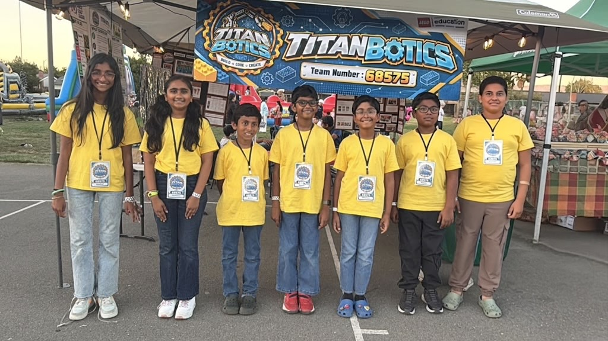

UNEARTHED · 2025–26
1st in Core Values
Among 24 teams. Invited to Regionals.
Season highlights →A FIRST LEGO League team
We’re Titanbotics. We build, code, and create.
BIOGLOW · Our FLL innovation project

Our photo-based platform for exploring invasive plants, forest recovery, and litter. Choose a mission, share a photo, or try our image detector.
Try Field Detectives
UNEARTHED · 2025–26
Among 24 teams. Invited to Regionals.
Season highlights →Build. Code. Test.